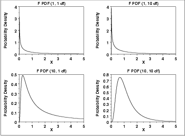
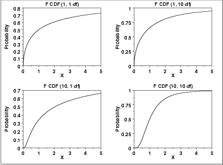
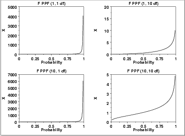

|
1.
Exploratory Data Analysis
1.3. EDA Techniques 1.3.6. Probability Distributions 1.3.6.6. Gallery of Distributions
|
|||||||||||||
| Probability Density Function |
The F distribution is the ratio of two
chi-square distributions with degrees of freedom
ν1 and ν2, respectively, where
each chi-square has first been divided by its degrees of freedom. The
formula for the probability density
function of the F distribution is
The following is the plot of the F probability density function for 4 different values of the shape parameters.  |
||||||||||||
| Cumulative Distribution Function |
The formula for the Cumulative distribution
function of the F distribution is
where B is the beta function
The following is the plot of the F cumulative distribution function with the same values of ν1 and ν2 as the pdf plots above.  |
||||||||||||
| Percent Point Function |
The formula for the percent point
function of the F distribution does not exist in
a simple closed form. It is computed numerically.
The following is the plot of the F percent point function with the same values of ν1 and ν2 as the pdf plots above.  |
||||||||||||
| Other Probability Functions | Since the F distribution is typically used to develop hypothesis tests and confidence intervals and rarely for modeling applications, we omit the formulas and plots for the hazard, cumulative hazard, survival, and inverse survival probability functions. | ||||||||||||
| Common Statistics |
The formulas below are for the case where the location parameter
is zero and the scale parameter is one.
|
||||||||||||
| Parameter Estimation | Since the F distribution is typically used to develop hypothesis tests and confidence intervals and rarely for modeling applications, we omit any discussion of parameter estimation. | ||||||||||||
| Comments | The F distribution is used in many cases for the critical regions for hypothesis tests and in determining confidence intervals. Two common examples are the analysis of variance and the F test to determine if the variances of two populations are equal. | ||||||||||||
| Software | Most general purpose statistical software programs support at least some of the probability functions for the F distribution. | ||||||||||||